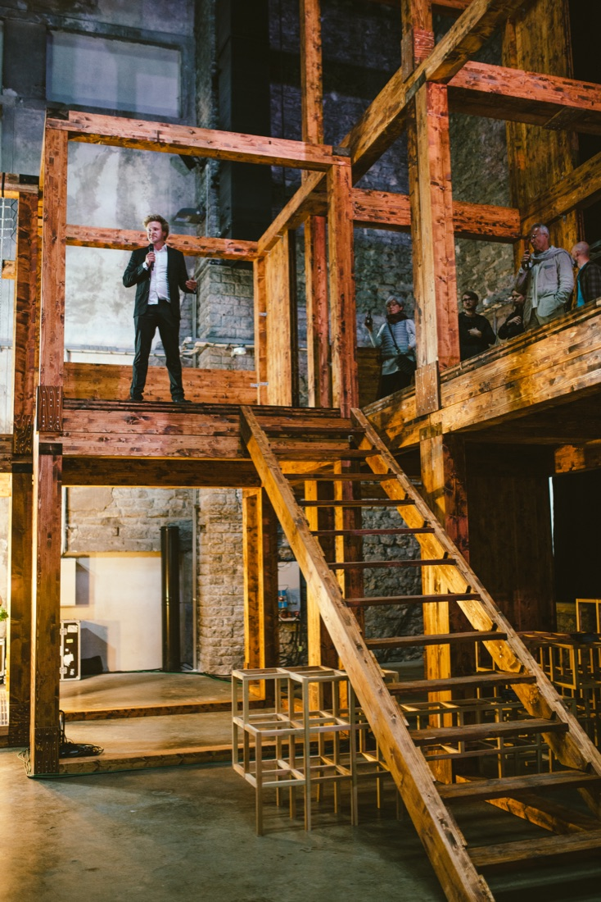

TAB-Lab — Tallinn Architecture Biennale 2015
Not every SPIN Unit project is analysis for a client — this one was curatorial. Damiano Cerrone and Helen Pau were asked to curate TAB-Lab, the research-and-development strand of the 2015 Tallinn Architecture Biennale, themed “Isejuhtiv linn / Self-Driven City.”
TAB 2015 ran four parallel strands — a vision competition, a main exhibition, a symposium, and TAB-Lab — under head curator Marten Kaevats. TAB-Lab occupied the main hall of Kultuurikatel, a former power plant turned creative hub, for two weeks (9–20 September 2015), alongside a co-located TAB-Club and a basement MakerLab, funded in part by the Cultural Endowment of Estonia, the Nordic Culture Point, and Enterprise Estonia.
Rather than a conventional exhibition, TAB-Lab paired academic/research visions directly against the material and technological realities of production. Its centrepiece was “Paracity” by Marco Casagrande — a two-storey cross-laminated-timber structure built live inside the hall — alongside contributions from EKA, Lev Manovich, Cityvision, and others. SPIN Unit also used the space to present their own newly completed Turku research as a live example of their data-driven planning approach.
Curated and delivered across the biennale’s full run, including live on-site construction of the Paracity installation over several days, guided tours, and an educational programme run in tandem with the adjoining two-day symposium.
{kind=link}

Open full size ↗